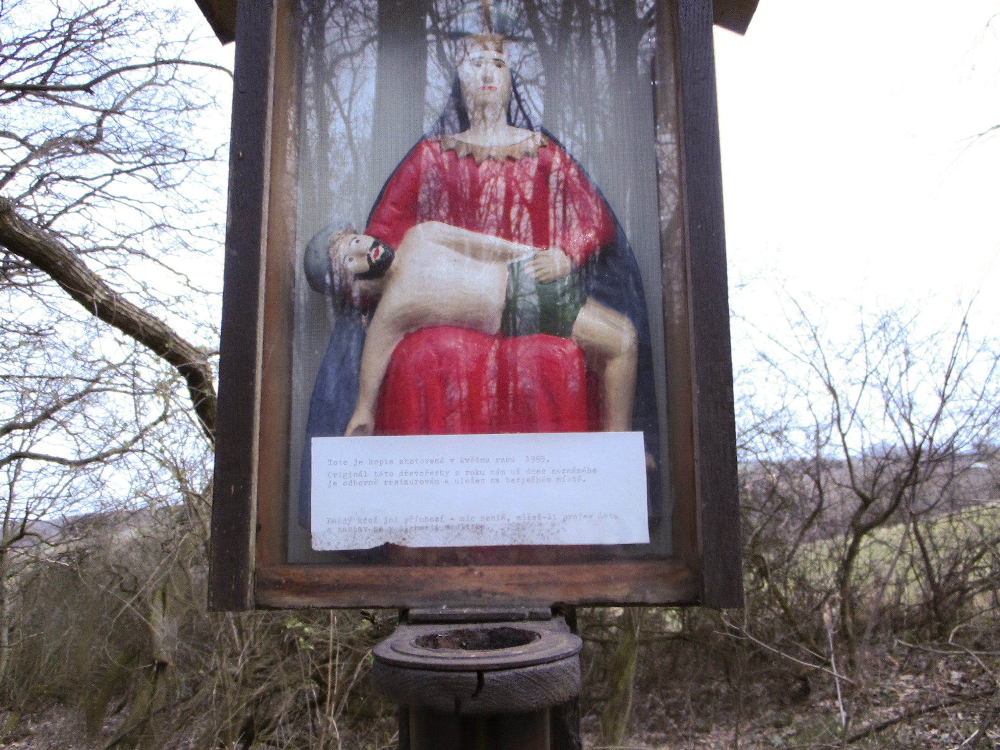
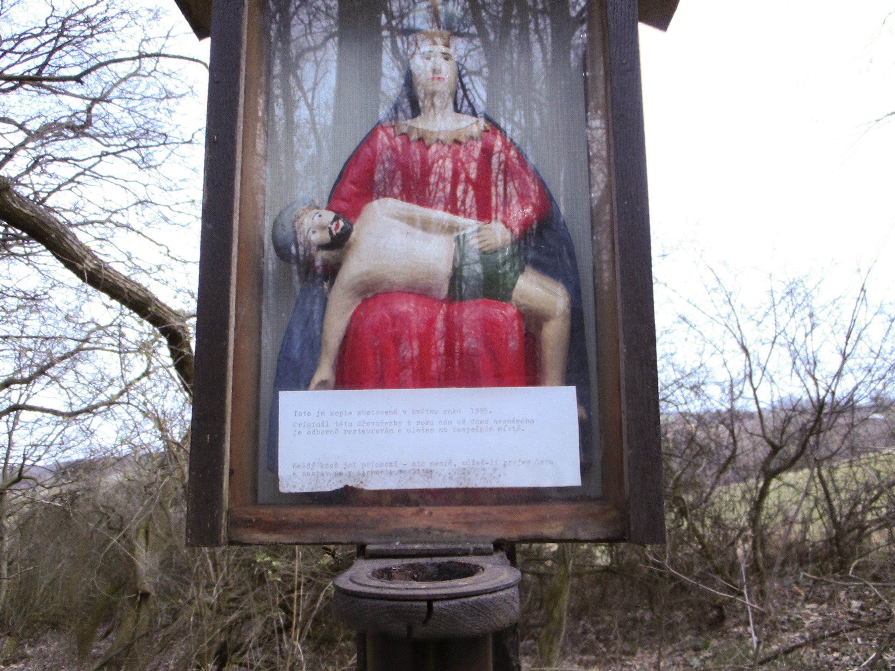

Panna Maria v Boří
Obrázek v Boří nechal v roce 1890 postavit pan Vyoral, otec Ludvíka a Aloise Vyoralových.
Alois byl mladý a byl velmi nemocný na plíce. Když se pak po dlouhé době uzdravil, nechal jeho otec postavit svatý obrázek. Byl ale jenom papírový, představující sv. Izidora, který byl po čase velmi potrhán. Toho si všimla stařenka Rosíková.
Když přestavovali domek, ve kterém bydlela, byl mezi okny výklenek s dřevěnou soškou Panny Marie s Ježíškem. Tuto sošku vzala a schovala. Ve třicátých letech minulého století nechala sošku opravit malířskému učni. Opravená soška se jí ale nelíbila.
Odnesla tedy sošku do Březolup k akademickému malíř, který ji znovu natřel a nechal na ni zhotovit kapličku. Takto stojí dřevěný obrázek na tomto místě dodnes.
Dnes stojí na opuštěném místě. Dříve však každý, kdo šel do Napajedel přes Boří, musel kolem něho přejít. V dnešní době však tady přejde málo lidí, tak také obrázek upadl v zapomenutí a tak i celá jeho historie.